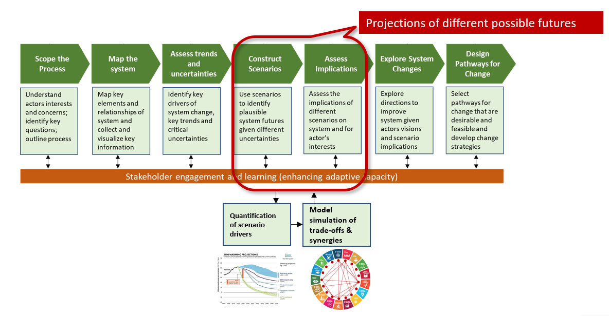

---
##########################################################################################
# TEMPLATE FOR PROJECT DESCRIPTIONS
# Example for IFAD, see https://www.magnet-model.eu/project/ifad/
# # indicates a comment so this part of the content can be safely removed.
##########################################################################################
title: Strengthening food systems planning and governance in Dhaka
summary:
tags: ["food system transformation"]
date: "2022-11-28"
# Optional external URL for project (note that this will create a direct link and replaces the project detail page).
external_link: ""
# Placement options: 1 = Full column width, 2 = Out-set, 3 = Screen-width
# Focal point options: Smart, Center, TopLeft, Top, TopRight, Left, Right, BottomLeft, Bottom, BottomRight
# No need to add anything here, unless you want to show the featured.png picture only in list of projects but
# not on top of the project description (preview_only: true). You can also add a caption to your featured.png that
# will be placed on top.
image:
preview_only: false
placement: ""
focal_point: ""
caption: ""
# Add relevant links here. They will be added as icons on top - see examples. If there are no links use ""
links:
- icon: chart-line
icon_pack: fas
name: "Dhaka Food System"
url: "https://www.wur.nl/en/research-results/research-institutes/centre-for-development-innovation/show-cdi/improving-dhakas-food-system.htm"
url_code: ""
url_pdf: ""
url_slides: ""
url_video: ""
# Slides (optional).
# Associate this project with Markdown slides.
# Simply enter your slide deck's filename without extension.
# E.g. `slides = "example-slides"` references `content/slides/example-slides.md`.
# Otherwise, set `slides = ""`.
slides: ""
---
Source: Dhaka Food System Foresight Dashboard
In a unique food system approach, institutes of Wageningen University & Research have integrated their expertise on diverse aspects that include food system governance, consumer behavior, food economy, agricultural production, logistics, spatial planning, and impact assessments of interventions. In a joint effort with the Food and Agricultural Organisation of the UN (FAO) as lead implementor and local stakeholders, WUR contributes to finding integrated solutions to address Dhaka’s present and future food needs. Focus is on the Dhaka Metropolitan area. MAGNET is used to support the clusster ‘Food System governance’ through foresight scenario modelling and impact assesment.

Source: DFS based on Foresight4Food
For the this study we use mixed methods research approach. First we conduct scenario workshops using exploratory foresight techniques form the backbone of the qualitative research complemented with expert interviews with key stakeholders and food system analysis based on secondary sources. Inisghts from these qualitative workshops and interviews feed into MAGNET in the form of demand side (Bangladesh dietry scenarios) and supply side (trade scenarios). The MAGNET macro results are combined with a Dynamic spatial microsimulation (DSM) model to conduct forward looking scenario analysis of poverty, food insecurity and malnutrition at the household level for the Dhaka district and the Dhaka city corpoations. The main outcome of the cluster is a Dhaka Food Agenda 2041 and a decision support toolbox featuring MAGNET and DSM.
Contact: Saeed Moghayer